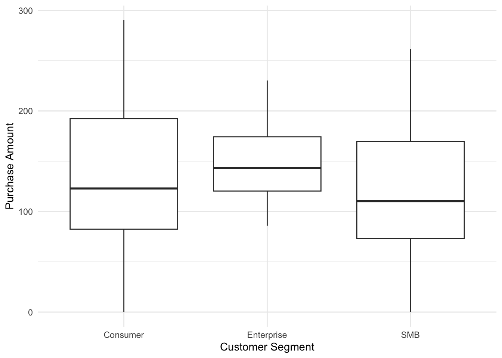
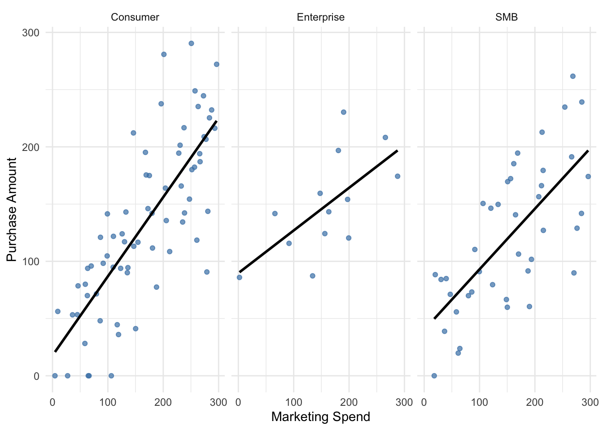
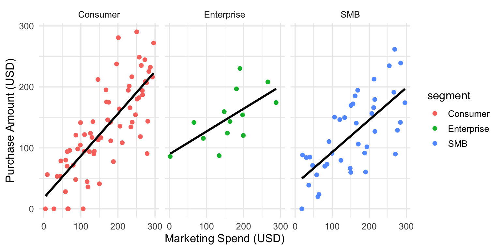

spc_tbl_ [150 × 7] (S3: spec_tbl_df/tbl_df/tbl/data.frame)
$ customer_id : chr [1:150] "36621617_c0001" "36621617_c0002" "36621617_c0003" "36621617_c0004" ...
$ signup_date : chr [1:150] "2025-09-05" "2025-01-27" "2025-03-07" "2025-04-04" ...
$ marketing_spend: num [1:150] 250.8 215.2 47.1 190.1 184.8 ...
$ visits : num [1:150] 9 8 2 10 8 5 9 7 2 4 ...
$ purchase_amount: num [1:150] 290.4 127 71.2 60.5 186.6 ...
$ segment : chr [1:150] "Consumer" "SMB" "SMB" "SMB" ...
$ notes : chr [1:150] NA NA "no response" NA ...
- attr(*, "spec")=
.. cols(
.. customer_id = col_character(),
.. signup_date = col_character(),
.. marketing_spend = col_double(),
.. visits = col_double(),
.. purchase_amount = col_double(),
.. segment = col_character(),
.. notes = col_character()
.. )
- attr(*, "problems")=<externalptr> Assignment 1: Effect of Marketing Spend on Purchase Amount
Introduction
Over the last quarter, our company ran a marketing campaign where we varied how much we spent contacting individual customers (ads, emails, coupons). We will be using this data to determine if higher marketing spend per customer lead to higher purchase amounts. We would also be comparing the data between different customer segments.
Research Questions
Using the data from the campaign, this report investigates whether higher per-customer marketing spend is associated with higher purchase amounts. The aim is to assess whether increasing marketing investment is an effective strategy for driving customer spending and to gain insight into the potential return on investment.
Dataset Introduction
The dataset consists of customer-level observations from a marketing campaign carried out over a quarter by a retailer. Each row represents a unique customer capturing both the marketing spend allocated to them and their resulting purchase behavior.
Data Cleaning
The dataset contains 150 observations and 7 variables. Initial inspection of the data structure revealed several issues that required cleaning prior to analysis.
Firstly, sign_up variable was stored as a character string in multiple inconsistent formats. To ensure consistency, it was converted into a standard date format using the ‘parse_date_time()’ function.
Secondly, the dataset contained missing values across several variables. Observations with incomplete values were removed to ensure the reliability of the analysis.
Finally, the notes variable was excluded from the dataset, as it contained non-essential information that was not relevant to the research objectives.
Dataset Description
After cleaning, the data set has 124 rows and 6 columns.
| Customer Segment | Total Customers | Average Spend | Average Purchase | Average Visits |
|---|---|---|---|---|
| Consumer | 70 | 165.91 | 132.46 | 5.14 |
| Enterprise | 13 | 160.13 | 149.35 | 6.08 |
| SMB | 41 | 154.21 | 121.70 | 5.93 |
The above table gives us a summary of how many observations have been recorded for different segments, along with the average spend, purchase and visits for each of the segments.

The distribution of purchase amounts varies across customer segments, as shown in Figure 1. Looking at the box plot, we notice that enterprise customers have the highest median purchase amount. In contrast, SMB customers have the lowest median purchase amount and also show a wider spread suggesting greater variability in spending behavior. Consumer customers fall between the two.
Results


Call:
lm(formula = purchase_amount ~ marketing_spend, data = cleaned_data)
Residuals:
Min 1Q Median 3Q Max
-111.695 -33.447 0.807 33.228 125.835
Coefficients:
Estimate Std. Error t value Pr(>|t|)
(Intercept) 32.04578 9.07601 3.531 0.000585 ***
marketing_spend 0.61096 0.05012 12.190 < 2e-16 ***
---
Signif. codes: 0 '***' 0.001 '**' 0.01 '*' 0.05 '.' 0.1 ' ' 1
Residual standard error: 45.79 on 122 degrees of freedom
Multiple R-squared: 0.5491, Adjusted R-squared: 0.5454
F-statistic: 148.6 on 1 and 122 DF, p-value: < 2.2e-16The relationship between marketing spend and purchase amount was explored using a scatter plot and a linear regression model. As shown in Figure 2 there is a positive relationship between the two variables. This indicates customers who receive higher marketing spend tend to spend more.
A linear regression model was fitted to measure this relationship. The results show that marketing spend is a good predictor of purchase amount (p < 0.001). The estimated effect is 0.611, meaning that for every 1 unit increase in marketing spend, purchase amount increases by about 0.611 units on average.
The R-squared value is 0.549, which means that about 54.9% of the variation in purchase amount can be explained by marketing spend. This suggests that marketing spend has an important but not complete influence on customer purchases.